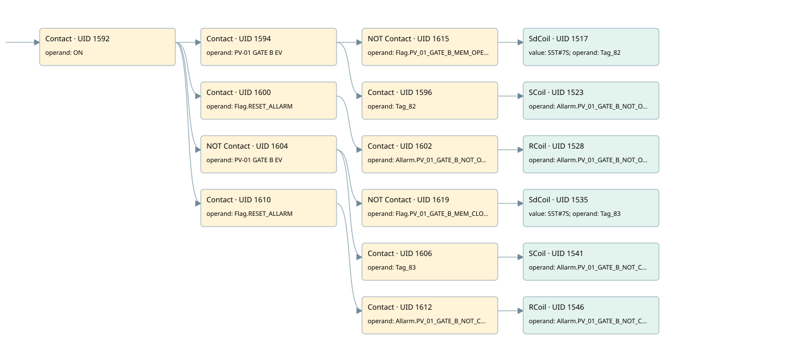

pv01
allarms 1 · 검색 색인 순서 36 · 원본 내부 NID 추정 43
백업 PLF 원본의 3066972 바이트 위치에서 복원한 XML. 검색 문서 1816의 객체 키 161022007662000000000000와 연결했다. 이름 해석 19/19개. 남은 RefId는 상수 또는 미해석 참조다.
연결 구조 다시 그리기
원본 Part/PCon/Wire를 이용한 연결도다. TIA 화면의 래더 배치 또는 실행 결과를 재현한 그림은 아니다. 핀 연결은 아래 표와 원본 XML을 기준으로 읽는다. 노드 위에 마우스를 두면 피연산자 이름을 볼 수 있다.

접점·코일·블록과 피연산자
| Part UID | Gate | Negated 핀 | 연결 피연산자 |
|---|---|---|---|
| 1592 | Contact | operand = ON | |
| 1594 | Contact | operand = PV-01 GATE B EV | |
| 1615 | Contact | operand | operand = Flag.PV_01_GATE_B_MEM_OPEN |
| 1517 | SdCoil | value = S5T#7S; operand = Tag_82 | |
| 1596 | Contact | operand = Tag_82 | |
| 1523 | SCoil | operand = Allarm.PV_01_GATE_B_NOT_OPEN | |
| 1600 | Contact | operand = Flag.RESET_ALLARM | |
| 1602 | Contact | operand = Allarm.PV_01_GATE_B_NOT_OPEN | |
| 1528 | RCoil | operand = Allarm.PV_01_GATE_B_NOT_OPEN | |
| 1604 | Contact | operand | operand = PV-01 GATE B EV |
| 1619 | Contact | operand | operand = Flag.PV_01_GATE_B_MEM_CLOSE |
| 1535 | SdCoil | value = S5T#7S; operand = Tag_83 | |
| 1606 | Contact | operand = Tag_83 | |
| 1541 | SCoil | operand = Allarm.PV_01_GATE_B_NOT_CLOSE | |
| 1610 | Contact | operand = Flag.RESET_ALLARM | |
| 1612 | Contact | operand = Allarm.PV_01_GATE_B_NOT_CLOSE | |
| 1546 | RCoil | operand = Allarm.PV_01_GATE_B_NOT_CLOSE |
접점 경로를 펼친 조건식
Contact·O/A·비교기의 원본 연결을 읽기 쉽게 펼친 보조 해석이다. POWER는 전원 레일 시작을 뜻한다. 호출 블록·에지·타이머의 내부 동작과 다중 쓰기 순서는 이 표로 실행 검증하지 않았다. 미해석 핀과 RefId는 원문 연결표에서 확인한다.
| UID | 동작 | 대상 | 원본 접점 경로 | 내용 |
|---|---|---|---|---|
| 1517 | SdCoil | Tag_82 | ((ON AND PV-01 GATE B EV) AND NOT [Flag.PV_01_GATE_B_MEM_OPEN]) | 시간 동작 SdCoil; 타이머 의미 추가 확인 / 시간 인자 S5T#7S |
| 1523 | SCoil | Allarm.PV_01_GATE_B_NOT_OPEN | ((ON AND PV-01 GATE B EV) AND Tag_82) | 조건 성립 시 Set |
| 1528 | RCoil | Allarm.PV_01_GATE_B_NOT_OPEN | ((ON AND Flag.RESET_ALLARM) AND Allarm.PV_01_GATE_B_NOT_OPEN) | 조건 성립 시 Reset |
| 1535 | SdCoil | Tag_83 | ((ON AND NOT [PV-01 GATE B EV]) AND NOT [Flag.PV_01_GATE_B_MEM_CLOSE]) | 시간 동작 SdCoil; 타이머 의미 추가 확인 / 시간 인자 S5T#7S |
| 1541 | SCoil | Allarm.PV_01_GATE_B_NOT_CLOSE | ((ON AND NOT [PV-01 GATE B EV]) AND Tag_83) | 조건 성립 시 Set |
| 1546 | RCoil | Allarm.PV_01_GATE_B_NOT_CLOSE | ((ON AND Flag.RESET_ALLARM) AND Allarm.PV_01_GATE_B_NOT_CLOSE) | 조건 성립 시 Reset |
원본 배선 연결
| Wire UID | 동일 Wire 연결 끝점 |
|---|---|
| 1614 | Powerrail {} ↔ Part 1592.in |
| 1566 | ORef 1547 (ON) ↔ Part 1592.operand |
| 1593 | Part 1592.out ↔ Part 1594.in ↔ Part 1600.in ↔ Part 1604.in ↔ Part 1610.in |
| 29 | ORef 30 (PV-01 GATE B EV) ↔ Part 1594.operand |
| 1595 | Part 1594.out ↔ Part 1615.in ↔ Part 1596.in |
| 1618 | ORef 1616 (Flag.PV_01_GATE_B_MEM_OPEN) ↔ Part 1615.operand |
| 21 | Part 1615.out ↔ Part 1517.in |
| 1568 | ORef 1549 (S5T#7S) ↔ Part 1517.value |
| 1569 | ORef 1550 (Tag_82) ↔ Part 1517.operand |
| 1570 | ORef 1551 (Tag_82) ↔ Part 1596.operand |
| 22 | Part 1596.out ↔ Part 1523.in |
| 1573 | ORef 1553 (Allarm.PV_01_GATE_B_NOT_OPEN) ↔ Part 1523.operand |
| 1575 | ORef 1554 (Flag.RESET_ALLARM) ↔ Part 1600.operand |
| 1601 | Part 1600.out ↔ Part 1602.in |
| 1576 | ORef 1555 (Allarm.PV_01_GATE_B_NOT_OPEN) ↔ Part 1602.operand |
| 1603 | Part 1602.out ↔ Part 1528.in |
| 1578 | ORef 1556 (Allarm.PV_01_GATE_B_NOT_OPEN) ↔ Part 1528.operand |
| 31 | ORef 32 (PV-01 GATE B EV) ↔ Part 1604.operand |
| 1605 | Part 1604.out ↔ Part 1619.in ↔ Part 1606.in |
| 1622 | ORef 1620 (Flag.PV_01_GATE_B_MEM_CLOSE) ↔ Part 1619.operand |
| 23 | Part 1619.out ↔ Part 1535.in |
| 1580 | ORef 1558 (S5T#7S) ↔ Part 1535.value |
| 1581 | ORef 1559 (Tag_83) ↔ Part 1535.operand |
| 1582 | ORef 1560 (Tag_83) ↔ Part 1606.operand |
| 24 | Part 1606.out ↔ Part 1541.in |
| 1585 | ORef 1562 (Allarm.PV_01_GATE_B_NOT_CLOSE) ↔ Part 1541.operand |
| 1587 | ORef 1563 (Flag.RESET_ALLARM) ↔ Part 1610.operand |
| 1611 | Part 1610.out ↔ Part 1612.in |
| 1588 | ORef 1564 (Allarm.PV_01_GATE_B_NOT_CLOSE) ↔ Part 1612.operand |
| 1613 | Part 1612.out ↔ Part 1546.in |
| 1590 | ORef 1565 (Allarm.PV_01_GATE_B_NOT_CLOSE) ↔ Part 1546.operand |
식별자 해석 근거 19개
| ORef UID | RefId | 이름 | IdentXmlPart 파일 | 해석 방법 |
|---|---|---|---|---|
| 1547 | 1 | ON | 0658-IdentXmlPart.xml | UID/RID + search-text + NID agreement |
| 30 | 155 | PV-01 GATE B EV | 0658-IdentXmlPart.xml | UID/RID + search-text + NID agreement |
| 1616 | 158 | Flag.PV_01_GATE_B_MEM_OPEN | 0657-IdentXmlPart.xml | UID/RID + search-text + NID agreement |
| 1550 | 180 | Tag_82 | 0658-IdentXmlPart.xml | UID/RID + search-text + NID agreement |
| 1549 | 320 | S5T#7S | 0656-IdentXmlPart.xml | literal candidate: UID/RID/NID + nearby named declarations + search-text agreement |
| 1551 | 180 | Tag_82 | 0658-IdentXmlPart.xml | UID/RID + search-text + NID agreement |
| 1553 | 181 | Allarm.PV_01_GATE_B_NOT_OPEN | 0657-IdentXmlPart.xml | UID/RID + search-text + NID agreement |
| 1554 | 13 | Flag.RESET_ALLARM | 0657-IdentXmlPart.xml | UID/RID + search-text + NID agreement |
| 1555 | 181 | Allarm.PV_01_GATE_B_NOT_OPEN | 0657-IdentXmlPart.xml | UID/RID + search-text + NID agreement |
| 1556 | 181 | Allarm.PV_01_GATE_B_NOT_OPEN | 0657-IdentXmlPart.xml | UID/RID + search-text + NID agreement |
| 32 | 155 | PV-01 GATE B EV | 0658-IdentXmlPart.xml | UID/RID + search-text + NID agreement |
| 1620 | 159 | Flag.PV_01_GATE_B_MEM_CLOSE | 0657-IdentXmlPart.xml | UID/RID + search-text + NID agreement |
| 1559 | 182 | Tag_83 | 0658-IdentXmlPart.xml | UID/RID + search-text + NID agreement |
| 1558 | 320 | S5T#7S | 0656-IdentXmlPart.xml | literal candidate: UID/RID/NID + nearby named declarations + search-text agreement |
| 1560 | 182 | Tag_83 | 0658-IdentXmlPart.xml | UID/RID + search-text + NID agreement |
| 1562 | 183 | Allarm.PV_01_GATE_B_NOT_CLOSE | 0657-IdentXmlPart.xml | UID/RID + search-text + NID agreement |
| 1563 | 13 | Flag.RESET_ALLARM | 0657-IdentXmlPart.xml | UID/RID + search-text + NID agreement |
| 1564 | 183 | Allarm.PV_01_GATE_B_NOT_CLOSE | 0657-IdentXmlPart.xml | UID/RID + search-text + NID agreement |
| 1565 | 183 | Allarm.PV_01_GATE_B_NOT_CLOSE | 0657-IdentXmlPart.xml | UID/RID + search-text + NID agreement |
검색 코드 보조 자료
참조 명칭을 찾기 위한 자료이며 실행 순서나 AND/OR 관계는 위 연결표로 확인한다.
"on" "pv-01 gate b ev" "flag".pv_01_gate_b_mem_open "tag_82" s5t#7s "flag".reset_allarm "allarm".pv_01_gate_b_not_open "allarm".pv_01_gate_b_not_open "pv-01 gate b ev" "flag".pv_01_gate_b_mem_close "tag_83" s5t#7s "tag_83" "allarm".pv_01_gate_b_not_close "flag".reset_allarm "allarm".pv_01_gate_b_not_close "allarm".pv_01_gate_b_not_close "tag_82" "allarm".pv_01_gate_b_not_open